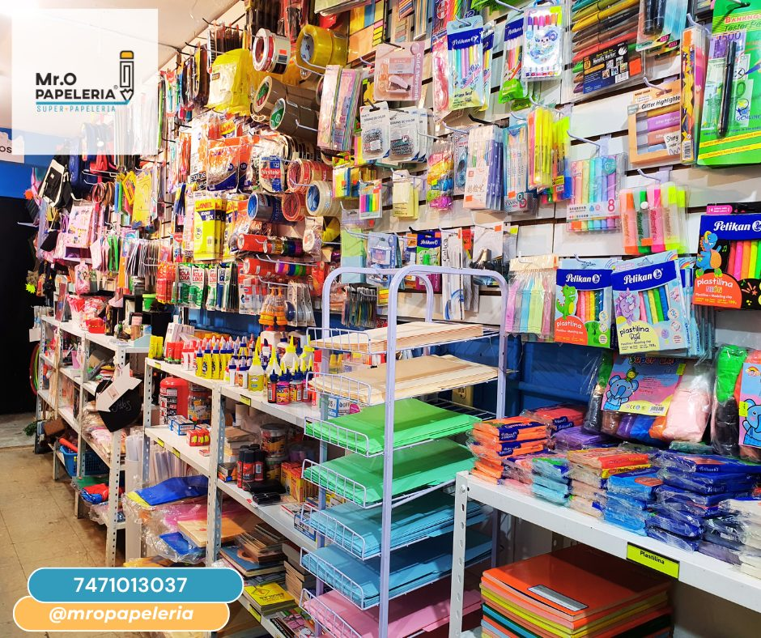

Quiénes somos
Un negocio local que integra papelería, impresión, documentos digitales, trámites básicos y apoyo visual para comunicar mejor.
Papelería MRO es una empresa ubicada en Chilpancingo, Guerrero, dedicada a ofrecer soluciones digitales, documentales, impresión, papelería, diseño gráfico y desarrollo web para personas y pequeños negocios.

Un negocio local que integra papelería, impresión, documentos digitales, trámites básicos y apoyo visual para comunicar mejor.
Escuchamos lo que necesitas, orientamos el proceso y buscamos resolver con claridad, rapidez y cuidado documental.
No nos limitamos a vender artículos de papelería. Nuestro trabajo se enfoca en ayudar a las personas a resolver documentos, impresiones, archivos digitales, trámites básicos y necesidades visuales o digitales de sus negocios.
Estudiantes, trabajadores, profesionistas, familias, emprendedores y pequeños negocios que necesitan apoyo práctico en un solo lugar.
Papelería MRO busca que cada visita sea clara: desde imprimir un documento hasta preparar archivos, consultar un trámite básico, diseñar una pieza gráfica o crear una página informativa para un negocio.